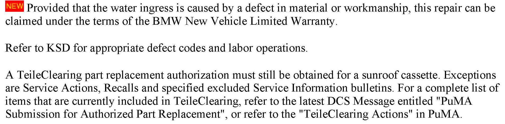
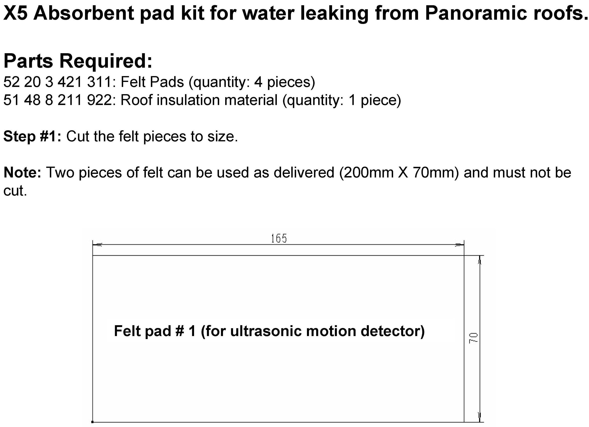

Body - Water Leaking From The Panoramic Sunroof
SI B54 06 06Special Roofs
October 2009
Technical Service
This Service Information bulletin supersedes SI B54 06 06 dated November 2008.
[NEW] designates changes to this revision
SUBJECT
Water Leak from Panoramic Sunroof
MODEL
E53, E70 (X5)
E61 (5 Series Sports Wagon)
E83 (X3)
E91 (3 Series Sports Wagon)
SITUATION
The customer may complain of a water leak from the overhead console area during heavy rain or when driving and/or parking on a steep slope facing downhill.
CAUSE
Possible causes.
A. Obstructed or damaged drains or drain tubes
B. Void in the windshield urethane bead
C. Excessive water entering the cassette
D. Inadequate water management system in the sunroof cassette.
CORRECTION
Inspect various components of the sunroof system. Perform a leak test and then perform the recommended repair, based on the outcome of these inspections.
An improved sunroof cassette with an optimized water management system has been implemented in production since 10/05.
The current improved part is available as a complete color-keyed cassette, as opposed to the bare frame previously available.
PROCEDURE
Inspect for the following causes and perform the applicable repair.
Cause A (Obstructed drains):
^ Inspect the cassette drains and drain tubes for any obstructions or kinks in the tubes.
^ If any concerns are found with these items, they should be cleaned and/or repaired and/or replaced as necessary.
Cause B: (Windshield sealant)
^ Inspect the top edge of the windshield glass for any possible voids in the urethane bead.
^ Using water or compressed air may help in locating a leak.
^ If any voids are found, the windshield must be replaced.
Cause C: (Excessive water entering the cassette)
^ Inspect the condition of the perimeter seal and the gap clearance between:
1. The sunroof glass and the roof panel.
2. The two glass panels.
3. Note: A 5.8 plusmn; 0.3mm gap all around (without seal) is required and can be measured with the special gap tool, P/N 00 9 341, or similar.
^ If any excessive gaps are found, adjust the glass panels as per RA 54 13 003.
^ If the perimeter seal appears to have deteriorated or be permanently compressed in any way, it must be replaced per RA 54 13 055.
^ After adjusting the glass and replacing the perimeter seal, the sunroof should be water-tested. If the sunroof still leaks, proceed to cause D.
Cause D: (Inadequate water management)
^ If no fault could be found with causes A-C, perform the following actions:
1. If the vehicle was produced before 10/2005, replace the sunroof cassette per RA 54 13 080.
If the vehicle was produced after 10/2005, do not replace the cassette, but still perform the following countermeasures.
Note:
The cassette available is the color-keyed updated cassette, complete with headliner and glass panels.
2. Apply light electrical contact grease to all the electrical connectors and the emergency call (SOS) switch in the front interior light console. The surface area must be cleaned as necessary.
3. Replace the perimeter seal as per RA 54 13 055.
4. Install the absorbent pad kit as per the instructions provided in the appropriate Absorbent pad kit attachment.
Note:
This kit must be installed exactly as shown in the attachment for maximum effectiveness.
5. Perform the additional sealing operation as described in the Cassette sealing attachment.
6. Initialize the sunroof per Repair Instruction 54 0 ...
7. Water-test to ensure proper water management.
PARTS INFORMATION

WARRANTY INFORMATION
ATTACHMENTS

view PDF attachment B540606E53_Absorbent_Pad_Kit.
view PDF attachment B540606E83_Absorbent_Pad_Kit.

view PDF attachment B540606E61_Absorbent_Pad_Kit.
view PDF attachment B540606Cassette_Sealing.

Disclaimer